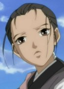

| |
Natasha |
- Pokemon Advanced Generations
|
Natasha is the owner of a watermelon patch near Mauville City and takes great pride in it. She named herself "Melon Master." She has her Electrode which is painted like a watermelon, help her guard them. |
 |
Sheska |
- Fullmetal Alchemist
- Fullmetal Alchemist: The Conqueror of Shamballa
|
Sheska ia a bookworm with house full with books. She is gifted with the ability to remember and reproduce anything she has read with word to word accuracy. She is currently with the military. |
|  |
Suzu |
|
Suzu is a girl sho originally born to a poor farmer's family in Meiji era Japan. She end up in the Twelve Kingdom bya shoku. She is unable to communicate with anyone and falls into despair. She cares for people who she has befriended in and wants to be friends with Queen of Kei. She was also mistreated as well. |